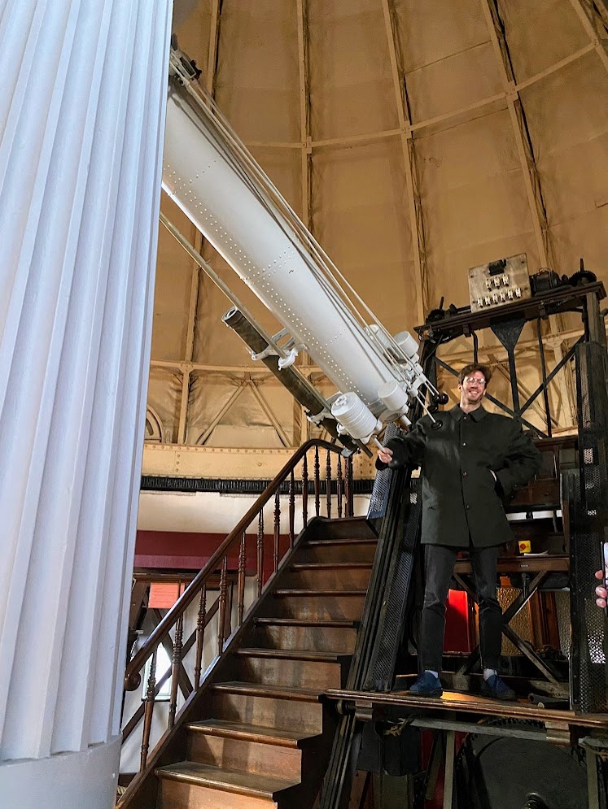

I'm a cosmologist working on large-scale structure, weak gravitational lensing, galaxy clusters, creating redshift catalogues, learning more about intrinsic alignment and many other things.
I'm a postdoctoral researcher at CosmoStat (CEA Paris-Saclay), working on observational cosmology. I am currently looking for a job (send me an email if you would like to work with me).
My research focuses on understanding how galaxies populate the cosmic web and learning more about the nature of dark energy.
Euclid
I'm working on weak lensing of clusters and clustering of galaxies around clusters.
UNIONS
3×2pt analysis, creating the shape catalogue and the position catalogue.

At the Observatoire Astronomique de Strasbourg.
The Legacy Surveys × SPHEREx Galaxy Catalogue
I selected sources using the DESI legacy imaging surveys and used SPHEREx spectrophotometry to measure their redshifts. This provides a catalogue of 71,204,033 galaxies across almost the entire extragalactic sky.
Each black point is a galaxy observed by SPHEREx + DESI Legacy Imaging Survey. As we look at galaxies which are further and further away we can see the evolution of the cosmic web.
The UNIONS collaboration announced it in July 2026: ten years of imaging the northern sky and the shapes of 61 million distant galaxies, and the mass their distortion reveals. The blue is that mass.
C. Murray, M. Kilbinger, C. Payerne (2026). Two-dimensional weak lensing shear for cluster mass, concentration, ellipticity and miscentering estimation. arXiv:2609.24948.
C. Murray, R. Kou, J. G. Bartlett (2025). Detecting gravitational lensing by matter currents. A&A 708, A48 (2026), arXiv:2510.19798.
C. Murray, C. Combet, C. Payerne, M. Ricci (2025). Filtering out large-scale noise for cluster weak-lensing mass estimation. A&A 697, A141 (2025), arXiv:2505.13399.
C. Murray, J. G. Bartlett, E. Artis, J. Melin (2022). Measuring weak lensing masses on individual clusters. MNRAS 512, 4785 (2022), arXiv:2204.02229.
C. Murray (2021). The effects of lensing by local structures on the dipole of radio source counts. MNRAS 510, 3098 (2022), arXiv:2112.06689.
Second author papers
P. H. Nguyen, C. Murray (2026). Observing the Peculiar Acceleration of our Solar System with Quasar Proper Motions. A&A (accepted), arXiv:2605.30367.
C. Payerne, C. Murray, H. Simon (2026). Simulation-based cosmological inference from optically-selected galaxy clusters with Capish. A&A (accepted), arXiv:2602.01911.
C. Payerne, C. Murray, C. Combet, M. Penna-Lima (2024). Towards including super-sample covariance in the unbinned likelihood for cluster abundance cosmology. MNRAS (accepted), arXiv:2401.10024.
R. Kou, C. Murray, J. G. Bartlett (2023). Constraining f(R) gravity with cross-correlation of galaxies and cosmic microwave background lensing. A&A 686, A193 (2024), arXiv:2311.09936.
C. Payerne, C. Murray, C. Combet, C. Doux, A. Fumagalli, M. Penna-Lima (2022). Testing the accuracy of likelihoods for cluster abundance cosmology. MNRAS 520, 6223 (2023), arXiv:2210.11093.
Among other public outreach activities, I have been organising Astronomy on Tap in Paris since November 2023, where we get to explain astrophysics to the general public in a relaxed, friendly setting.